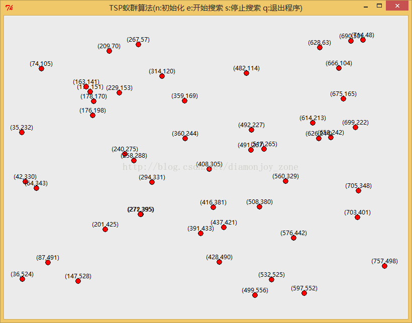

使用蚁群算法(ACO)、遗传算法(GA)、霍普菲尔德网络(Hopfield)解决旅行商问题(TSP)
在研究生《人工智能》课堂上学习了蚁群算法之后，老师提出了可以解决旅行商问题的三种思路，分别通过神经网络计算、进化计算和群智能计算得到最佳途径：

如何在此包含50个城市坐标的地图搜索出一条路径，遍历每一座城市且不重复地返回原点？本文选取蚁群算法、遗传算法和霍普菲尔德网络的方法，分别实现其算法的 Python 程序，并进行了实验比较。
完整代码可在 @DiamonJoy下载
1. 旅行商问题（TSP）
旅行商问题 TSP 是一个典型的组合优化问题，并且是一个 NP 完全问题， 其可能 Hamilton 圈的数目是顶点的数目 n 的指数函数，所以一般很难精确地求出其最优解。所谓组合优化问题，是指在离散的，有限的数学结构上，寻找一个满足给定条件，并使其目标函数值达到最小或最 大的解。一般来说，组合优化问题通常带有大量的局部极值点，通常是非线性的 NP 完全问题。其最先起源于一个旅行商要访问他所有的客户，要发现一条最短的路线。用用图论的术语来说，旅行商问题就是在赋权完全图上找一个权最小的 Hamilton 圈。但是，首先从应用上来说，很多实际应用问题，如印制电路板的、连锁店的货物配送路线等，经简化的处理后，均可转化为旅行商问题TSP。
由于旅行商问题的重要应用价值，因而对旅行商问题的算法研究自然是一个无法回避的问题；其次，从理论上来说，它的计算复杂性研究在形成 NP
完全理论中起到奠基作用。今天，由于电子计算机科学技术的进展，这个古老问题的算法研究又重新注入了新的活力，旅行商问题研究的新思路、新方法、新成果必
将丰富 NP 完全理论的内涵，促进 NP 完全理论的发展。
2. 蚁群算法（ACO）
在 TSP 求解中，参与路径搜寻的每只蚂蚁都具有下列特征：
- 其选择城市的概率是城市之间的距离和连接支路上所包含的当前信息素余量的函数；
- 为了强制蚂蚁进行合法的周游,直到一次周游完成时，才允许蚂蚁游走已访问的城市；
- 当完成一次周游，每只蚂蚁在每条访问过的支路上留下信息素。
我以求解平面上 n 个城市的 TSP 问题 (1,2,…,50表示城市序号) 为例说明算法模型，城市坐标为：
- distance_x = [
- 178,272,176,171,650,499,267,703,408,437,491,74,532,
- 416,626,42,271,359,163,508,229,576,147,560,35,714,
- 757,517,64,314,675,690,391,628,87,240,705,699,258,
- 428,614,36,360,482,666,597,209,201,492,294]
- distance_y = [
- 170,395,198,151,242,556,57,401,305,421,267,105,525,
- 381,244,330,395,169,141,380,153,442,528,329,232,48,
- 498,265,343,120,165,50,433,63,491,275,348,222,288,
- 490,213,524,244,114,104,552,70,425,227,331]
# 城市坐标
distance_x = [
178,272,176,171,650,499,267,703,408,437,491,74,532,
416,626,42,271,359,163,508,229,576,147,560,35,714,
757,517,64,314,675,690,391,628,87,240,705,699,258,
428,614,36,360,482,666,597,209,201,492,294]
distance_y = [
170,395,198,151,242,556,57,401,305,421,267,105,525,
381,244,330,395,169,141,380,153,442,528,329,232,48,
498,265,343,120,165,50,433,63,491,275,348,222,288,
490,213,524,244,114,104,552,70,425,227,331]
n 个城市的 TSP 问题就是寻找通过 n 个城市各一次且最后回到出发点的最短路径。为模拟实际蚂蚁的行为，首先引入蚂蚁：
- class Ant(object):
- def __init__(self,ID):
- self.ID = ID
- self.__clean_data()
- def __clean_data(self):
- self.path = []
- self.total_distance = 0.0
- self.move_count = 0
- self.current_city = -1
- self.open_table_city = [True for i in xrange(city_num)]
- city_index = random.randint(0,city_num-1)
- self.current_city = city_index
- self.path.append(city_index)
- self.open_table_city[city_index] = False
- self.move_count = 1
#----------- 蚂蚁 -----------
class Ant(object):
# 初始化
def __init__(self,ID):
self.ID = ID # ID
self.__clean_data() # 随机初始化出生点
# 初始数据
def __clean_data(self):
self.path = [] # 当前蚂蚁的路径
self.total_distance = 0.0 # 当前路径的总距离
self.move_count = 0 # 移动次数
self.current_city = -1 # 当前停留的城市
self.open_table_city = [True for i in xrange(city_num)] # 探索城市的状态
city_index = random.randint(0,city_num-1) # 随机初始出生点
self.current_city = city_index
self.path.append(city_index)
self.open_table_city[city_index] = False
self.move_count = 1
定义蚂蚁数目为50，以 ID 标示每一只蚂蚁，在初始蚂蚁的时候，我随机将蚂蚁初始化在某一个城市，当前路径中仅有一个元素，为当前初始城市的序号，同样，移动次数为1，除初始城市外，其他城市未访问状态全为True，此时的路径总长度为0。
在初始时刻各条路径上的信息量相等，设 τij(0)=1.0：
- for i in xrange(city_num):
- for j in xrange(city_num):
- pheromone_graph[i][j] = 1.0
# 初始城市之间的距离和信息素
for i in xrange(city_num):
for j in xrange(city_num):
pheromone_graph[i][j] = 1.0
蚂蚁 k(k=1,2…,m) 在运动过程中，根据各条路径上的信息量和长度决定其转移方向，这里用城市未访问状态表 open_table_city 来记录蚂蚁 k 当前所走过的城市和未走过的城市。在搜索过程中，蚂蚁根据各条路径上的信息量及路径的启发信息来计算状态转移概率，与信息素浓度成正比，与距离成反比：
- select_citys_prob[i] = pow(pheromone_graph[self.current_city][i], ALPHA) * pow((1.0/distance_graph[self.current_city][i]), BETA)
select_citys_prob[i] = pow(pheromone_graph[self.current_city][i], ALPHA) * pow((1.0/distance_graph[self.current_city][i]), BETA)
随着时间的推移，以前留在各路径上的信息量逐渐消逝，经过n个时刻，蚂蚁完成一次循环，各路径上信息量要根据下式作调整：
- def __update_pheromone_gragh(self):
- temp_pheromone = [[0.0 for col in xrange(city_num)] for raw in xrange(city_num)]
- for ant in self.ants:
- for i in xrange(1,city_num):
- start, end = ant.path[i-1], ant.path[i]
- temp_pheromone[start][end] += Q / ant.total_distance
- temp_pheromone[end][start] = temp_pheromone[start][end]
- for i in xrange(city_num):
- for j in xrange(city_num):
- pheromone_graph[i][j] = pheromone_graph[i][j] * RHO + temp_pheromone[i][j]
# 更新信息素
def __update_pheromone_gragh(self):
# 获取每只蚂蚁在其路径上留下的信息素
temp_pheromone = [[0.0 for col in xrange(city_num)] for raw in xrange(city_num)]
for ant in self.ants:
for i in xrange(1,city_num):
start, end = ant.path[i-1], ant.path[i]
# 在路径上的每两个相邻城市间留下信息素，与路径总距离反比
temp_pheromone[start][end] += Q / ant.total_distance
temp_pheromone[end][start] = temp_pheromone[start][end]
# 更新所有城市之间的信息素，旧信息素衰减加上新迭代信息素
for i in xrange(city_num):
for j in xrange(city_num):
pheromone_graph[i][j] = pheromone_graph[i][j] * RHO + temp_pheromone[i][j]
由此，开始进行迭代，每一只依据当前城市距离和两个城市之间信息素的浓度搜索出一条路径，在所有的路径中与当前最优解进行比较，更新最优解。
3. 遗传算法（GA）
遗传算法的思路是将 TSP 对应的城市路径序列转化为群体中某一个个体的基因序列，例如 [1,2,3,…,50] 就是顺序遍历城市的基因序列，基因是有1到50组成且长度为50的单元无重复序列。
随机初始化一定个体，让群体在规定交叉概率下繁殖长生后代，同时新个体以一定概率进行突变，可能产生适应度更好的基因序列，这个适应度明显 是和其序列对应的路径长度成反比，通过适应度筛选后代和父代形成新群体，重复以上过程，迭代一定次数后群体里适应度最高的个体基因序列就对应着较好的遍历 路径。
下面介绍本次实现方法的关键操作：
- self.ga = GA(
- lifeCount = 50,
- xRate = 0.7,
- mutationRate = 0.1,
- judge = self.judge(),
- mkLife = self.mkLife(),
- xFunc = self.xFunc(),
- mFunc = self.mFunc(),
- save = self.save()
- )
# 遗传算法
self.ga = GA(
lifeCount = 50,
xRate = 0.7,
mutationRate = 0.1,
judge = self.judge(),
mkLife = self.mkLife(),
xFunc = self.xFunc(),
mFunc = self.mFunc(),
save = self.save()
)设定群体总数为50，交叉率为0.7，突变率为0.1，同时比较定义的交叉操作、突变操作和适应度评价函数：
- def xFunc(self):
- def f(lf1, lf2):
- p2 = random.randint(1, self.n - 1)
- g1 = lf2.gene[0:p2] + lf1.gene
- g11 = []
- for i in g1:
- if i not in g11:
- g11.append(i)
- return g11
- return f
# 交叉函数：选择lf2序列前子序列交叉到lf1前段，删除重复元素
def xFunc(self):
def f(lf1, lf2):
p2 = random.randint(1, self.n - 1)
# 截取if2
g1 = lf2.gene[0:p2] + lf1.gene
g11 = []
for i in g1:
if i not in g11:
g11.append(i)
return g11
return f- def mFunc(self):
- def f(gene):
- p1 = random.randint(0, self.n - 1)
- p2 = random.randint(0, self.n - 1)
- while p2 == p1:
- p2 = random.randint(0, self.n - 1)
- gene[p1], gene[p2] = gene[p2], gene[p1]
- gene.append(gene[p2])
- del gene[p2]
- return gene
- return f
# 变异函数:选择两个不同位置基因交换，第一个选择的基因重新加入到序列尾端
def mFunc(self):
def f(gene):
p1 = random.randint(0, self.n - 1)
p2 = random.randint(0, self.n - 1)
while p2 == p1:
p2 = random.randint(0, self.n - 1)
gene[p1], gene[p2] = gene[p2], gene[p1]
gene.append(gene[p2])
del gene[p2]
return gene
return f定义适应度函数采用当前路径的倒数：
- def judge(self):
- return lambda lf, av = 100: 1.0 / self.distance(lf.gene)
# 评价函数
def judge(self):
return lambda lf, av = 100: 1.0 / self.distance(lf.gene)
在定义了交叉函数和突变函数后，在每次迭代过程中选取适应度较高的个体产生新个体，由此进行迭代选取新群体中适应度最高的个体基因更新最优解。
4. 霍普菲尔德网络（Hopfield）
选取 Hopfield 作为神经网络解决 TSP 问题的方法，由于网络参数优化不够好，因此将城市数量减少到8个。
结果不好的原因是建立 Hopfield 网络得到的解，不一定是最优解，可能是次优解，或是不可行解。一般神经网络（RBF或BP）是单项的，而 Hopfield 网络特点在于有反馈，而最终得到的结果是一个网络的收敛值。对于一个 Hopfield 网络来说，关键是在于确定它在稳定条件下的权系数，不断的改变权系数来逼近样本。
Hopfield 网络的关键是能量函数：
连续 Hopfield 天生的特点，如果把一个最优化问题的目标函数转换成网络的能量函数，把问题的变量对应于网络的状态，那么 Hopfield 神经网络就能够用于解决优化组合问题。其具体的流程为：
示例代码中有详细注释，这里不做详解。
5. 对比
对同一张50个城市的坐标地图，进行了蚁群算法和遗传算法的比较，其中蚁群总体数设为50，信息素衰减率设为0.5；遗传群体数设为50，交叉率设为0.7，突变率设为0.1。
蚁群算法在迭代200次左右时，能够得到最优解：
遗传算法在迭代10000次左右时，趋于稳定得到次优解：
最后选取了8个城市作为 Hopfield 的输入，由于参数优化问题，并未得到较好结果，欢迎讨论。
蚁群算法和遗传算法能在较短时间内得到问题的较好的解，且蚁群算法由于逼近实际问题，在较少的迭代次数下就能得到最优解。遗传算法在不同的交叉率和 突变率下性能表现明显不同，且交叉和突变方式也能影响到实验结果。神经网络的方法有较大的矩阵操作计算量，同时对于状态改变的值也有着不同的影响程度，由 于时间关系并未优化出较好的参数值。